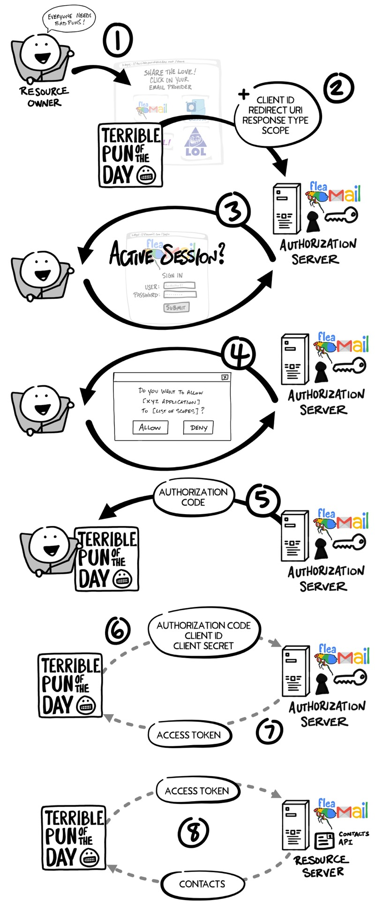

Browser is first forwarded from outlook.office365.com (top) to login.microsoft.com (bottom) And then it goes back to outlook, but the later has access to my emails (note, jira also works!)
— .class #id
Interacting bodies:
Additional terms:
— .class #id
— .class #id
Alice asks Bob to bring her valuables back from Carol, but how Carol knows Bob is not lying?
Carol asks Alice directly. And this is what happens in the example above:
Authorization Server doesn’t keep my emails, Data Storage Layer does but it needs simple pass
Here JSON Web Token kicks in: Authorization Server verifies the code and hand JWT to the client
— .class #id
JWT= “compact and self-contained way for securely transmitting info between parties as JSON”
JWT consists of base64-encoded Header, Payload, and Signature separated by ‘.’ (xxx.yyy.zzz)
Header typically consists of token type and signing algorithm, e.g.: {“alg”:“HS256”, “typ”:“JWT”}
Payload contains claims, statements about an entity (typically, the user) and additional data:
Signature verifies message’s integrity, and, if signed with a private key, sender’s identity; e.g.: HMACSHA256( base64UrlEncode(header) + “.” + base64UrlEncode(payload), secret)
— .class #id
(time for a small demo)
— .class #id
— .class #id
JWT is secure (i.e. signed), general purpose, and small overhead concept
Authorization with JWT offers a great flexibility to implement roles, views and specializations
(for example, same endpoint behaves differently whether you are SG service or a partner)
Source of info in this presentation:
https://developer.okta.com/blog/2019/10/21/illustrated-guide-to-oauth-and-oidc
https://developer.okta.com/blog/2017/06/21/what-the-heck-is-oauth
https://fusionauth.io/blog/2021/02/18/securing-golang-microservice/
https://testdriven.io/blog/oauth-python/
— &fourcol

*** =farleft

*** =left

*** =right

*** =farright

*** =fullwidth
Address bar: browser is forwarded from support.meduza.io (top) to paypal.com (bottoms)